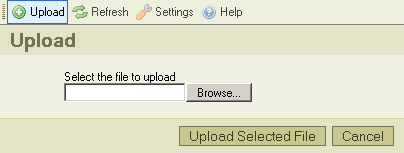

Lataa palvelimelle -nappi* työkalurivillä avaa "Lataa palvelimelle" -ruudun, jonka avulla lisätään uusia tiedostoja valittuun kansioon. Tässä kuvaruutukaappaus:

Napsauta "Peru"-nappia sulkeaksesi ruudun, tai napsauta uudelleen "Lataa palvelimelle"-nappia työkalurivillä.
* "Lataa palvelimelle" -termi tarkoittaa tiedoston siirtämistä paikalliselta tietokoneelta palvelimelle.
Voit nähdä seuraavia viestejä lataustapahtuman aikana:
Viesti tarkoittaa, että samanniminen kuin lataamasi tiedosto on jo tallennettu hakemistoon. Ristiriidan estämiseksi tiedostonimen perään lisätään juokseva numero "(1)".
Palvelin ei hyväksy ladattavaa tiedostoa. Yleensä kysymys on siitä, että CKFinder on asetettu estämään tiettyjen tiedostotyyppien lataaminen. Ne tunnistetaan tiedostotarkenteen perusteella. Lataaminen estetään tietoturvasyistä. Vaihtoehtoisesti tiedostokoko voi olla liian suuri. Siinä tapauksessa palvelin on konfiguroitava hyväksymään isompia tiedostoja.
Ladattava tiedosto sisältää HTML-koodia. Tietoturvasyistä vain määrätyillä tiedostotarkenteilla varustetut tiedostot saavat sisältää HTML-koodia. Ota yhteyttä pääkäyttäjään selvittääksesi, mitkä ovat hyväksyttäjä tiedostotyyppejä, ja mikä on niiden suurin sallittu koko.